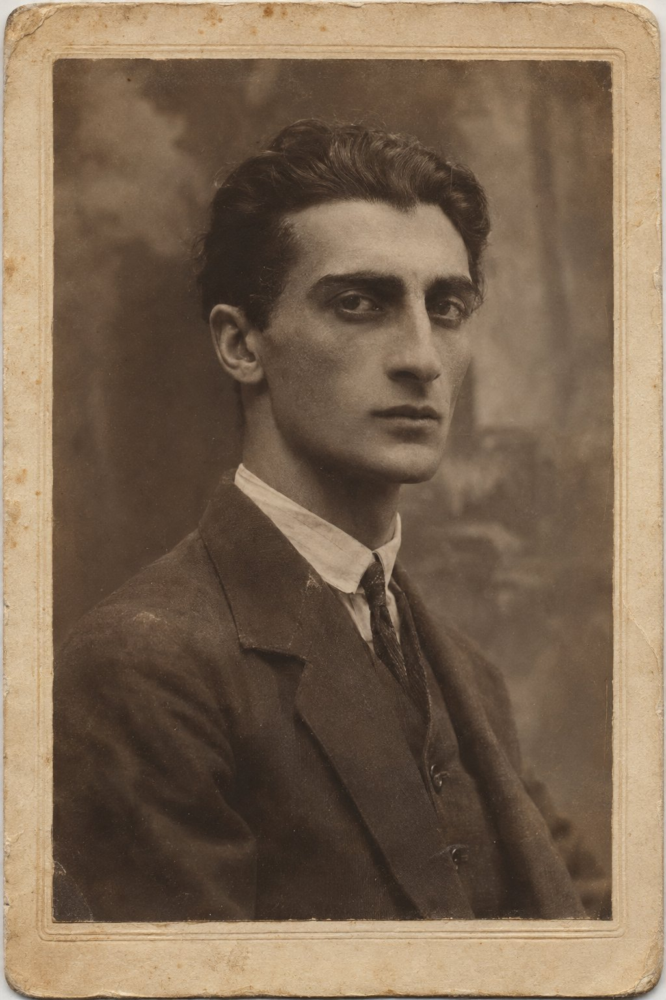

Хопа

«Для въезда в пределы Турции паспорт с визой турецкого консула (20 пиастров золотом, или 4 марки) совершенно необходим».
Бедекер, «Константинополь и Малая Азия. Путеводитель», Лейпциг, 1905. Введение, с. XV.
Под утро тучи разошлись, и Котэ увидел луну.
Она висела низко на западе, над водой, за кормой, почти полная, только с одного края чуть стёртая, будто кто-то провёл по ней пальцем. Всю ночь она пряталась, и Котэ был ей за это благодарен. Теперь она вышла, когда уже не была нужна никому, бледная, утренняя, и светила на пустое море, по которому они пришли.
Он сидел на дне лодки, в воде, которая набралась за ночь до щиколоток, и не чувствовал ног. Сначала он вычерпывал эту воду консервной банкой, которую ему сунул в руки младший лаз, потом перестал, потому что вода приходила снова, через какую-то щель в днище, тихо и упорно, как приходит в дом сырость. Мотор чихал. Он чихал всю ночь, и каждый раз, когда он замолкал, Котэ думал, что сейчас всё кончится, а мотор снова начинал стучать, и лодка шла дальше, длинная, чёрная, низкая, и пахла бензином и рыбой.
Нестор сидел рядом на поперечной доске, сгорбившись, в пальто, которое промокло насквозь и стало тяжёлым и тёмным. Он не спал. Котэ видел, как он время от времени снимает очки, протирает их мокрым платком, от чего стёкла становились только хуже, и снова надевает. Нестор делал так всегда, когда ему было не по себе: тридцать лет на уроках, когда класс не знал урока, и потом, в двадцать втором году, на кухне, когда ученик путал времена. Котэ смотрел на этот жест и успокаивался. Пока Нестор протирает очки, мир стоит на месте.
— Скоро, — сказал Нестор по-грузински, не оборачиваясь. — Видишь?
Котэ приподнялся. Впереди, где ночью ничего не было, кроме темноты и шума воды, теперь лежал берег. Он поднимался из моря сразу, без всякого пляжа, стеной, и стена эта была тёмно-зелёная, мохнатая, в клочьях тумана, а выше, за ней, стояли горы, и вершины гор прятались в тучах, которые ушли с моря туда, наверх. У самой воды белели дома, немного, десятка три, деревянные, в два этажа, на каменных подклетях, с широкими навесами крыш. Над домами торчал тонкий минарет. Из нескольких труб шёл дым.
— Хопа, — сказал младший лаз, проследив его взгляд, и улыбнулся так, будто показывал свой дом. Может быть, так оно и было.
---
Котэ знал о Хопе немного: то, что успел рассказать ему за два дня в Батуме хозяин духана, где они прятались.
Хопа была уездным городком турецкого вилайета Ризе, первым по эту сторону границы. Полвека назад, пока Батум не отошёл к русским, весь этот берег от Батума до Ризе назывался Лазистаном, и жили на нём лазы, народ, который говорит на своём языке, родном грузинскому, как двоюродный брат родному. Потом через этот берег прошла граница. Она прошла через Сарп, лазское село у самой воды, разрезала его надвое и разрезала лазов, как разрезают хлеб: половина осталась у Советов, половина у турок. Но граница была новая, а лазы старые. У хозяина батумского духана брат жил в Хопе, у брата в Хопе была лодка, у лодки был мотор, и лодки ходили с одного берега на другой, как ходили сто лет, только теперь ночью и мористее, как говорят моряки, то есть подальше от берега, в открытом море, далеко в обход, чтобы не попасться пограничникам.
— Что они возят? — спросил тогда Котэ.
Хозяин духана посмотрел на него, как смотрят на ребёнка.
— Людей, — сказал он. — И то, что люди везут с собой.
Котэ больше не спрашивал. Он видел, как на третью ночь в лодку грузили мешки, тугие, зашитые, и как мешки клали на дно, а его и Нестора сажали сверху, на мешки, и как потом, когда в лодке набралась вода, мешки укрыли брезентом, а людей укрывать не стали.
---
Лодка вошла в маленькую бухту, где у берега лежали на гальке другие лодки, такие же длинные, чёрные, с высокими носами. Мотор чихнул в последний раз и замолчал. Стало так тихо, что Котэ услышал, как скрипит под днищем галька и как где-то наверху, в домах, кричит петух.
Лазы спрыгнули в воду, по колено, и потащили лодку на берег. Котэ тоже хотел спрыгнуть и помочь, но не смог встать: ноги не слушались, и он сел обратно в воду на дне лодки, и младший лаз засмеялся и протянул ему руку. Нестор вылез сам, медленно, держась за борт, и долго стоял на гальке, покачиваясь, как стоят люди, которые сошли с корабля, а корабль у них в ногах ещё качается.
На берегу их ждали. Котэ не сразу понял, что их ждут: просто у лодок стояли люди, человек пять, в тёмных куртках, в широких штанах, заправленных в шерстяные носки, в вязаных шапках и в каких-то башлыках, намотанных на голову. Они смотрели на лодку без удивления. Двое подошли и, не говоря ни слова, стали выносить мешки и складывать их у сарая. Третий, старый, с белой бородой, подошёл к старшему лодочнику, обнял его и что-то спросил.
Старший лодочник, бородатый, в вязаной шапке, тот самый, что ночью первым поднялся со дна лодки и сплюнул за борт, ответил длинно, размахивая руками. Котэ не понимал слов. Он слышал лазскую речь два дня в Батуме и знал теперь, что она похожа на мегрельскую, а мегрельскую он слышал в детстве, когда отец брал его на базар в Кутаис. Если вслушаться, можно было поймать слово из трёх. Сейчас он вслушиваться не мог. Но он видел руки старшего лодочника. Руки показали море, потом что-то быстрое, идущее наперерез, потом подняли над головой ладонь и медленно опустили её вниз, на лодку, на людей в лодке, и задержали.
Старик с белой бородой поцокал языком и посмотрел на Котэ и Нестора. Потом он подошёл к Нестору, взял его руку обеими руками и сказал что-то, в чём Котэ поймал одно слово: «Бог».
— Он говорит: вас Бог любит, — сказал младший лаз по-грузински, с батумским выговором. — Он говорит: прожектор на вас стоял, а Бог отвёл.
Нестор кивнул старику и ничего не сказал.
---
Кофейня была в нижнем этаже одного из деревянных домов у самого берега. Хозяин её, тот самый старик с белой бородой, оказался дядей обоих лодочников и звался Хасан-ага, а слово «ага», объяснил младший лаз, значит здесь что-то вроде «уважаемый», так зовут старших. Внутри было темно, низко, тепло, пахло дымом, кофе и мокрой шерстью. Вдоль стен шли широкие лавки, покрытые коврами, вытертыми до основы, посреди комнаты стояла железная печка, и на ней в медных ковшиках с длинными ручками варился кофе.
Котэ посадили у печки. Хасан-ага сам принёс ему сухую рубаху, грубую, домотканую, пахнущую чужим сундуком, и шерстяные носки, и Котэ переоделся тут же, в углу, повернувшись к стене, и мокрую свою одежду развесил на верёвке над печкой, рядом с гирляндой сушёного перца. Нестору принесли такую же рубаху, но Нестор переодеваться не стал. Он снял только пальто, отжал его у двери и сел на лавку в мокром пиджаке, и снова снял очки, и снова стал их протирать, теперь сухим краем чужой рубахи, которую так и не надел.
— Батоно Нестор, — сказал Котэ, — вы простудитесь.
— Я не простужусь, — сказал Нестор. — Я в тысяча девятьсот седьмом году переплывал Куру в ноябре. На спор. Я тебе не рассказывал?
— Нет.
— Ну и хорошо. Не о чем рассказывать. — Он надел очки и посмотрел на Котэ. — Пей кофе. Здесь его варят так, что ложка стоит.
Кофе был горький, густой, в маленькой чашке без ручки, и на дне его лежала гуща толщиной в палец. К кофе принесли кукурузный хлеб, жёлтый, плотный, ещё горячий, и сыр, солёный, белый. Котэ ел и не мог остановиться. Он вдруг понял, что не ел со вчерашнего утра, с Батума. Хлеб был почти такой же, как мчади, какой пекли у них в деревне на глиняных кеци, только солонее, и от этого «почти» у него сжалось горло. Он отвернулся к печке и долго смотрел на огонь в щели дверцы.
---
Пока он ел, кофейня наполнилась.
Люди приходили по одному, по двое, здоровались с Хасан-агой, садились на лавки вдоль стен, брали кофе и смотрели на Котэ и Нестора. Смотрели без злобы, с тем спокойным любопытством, с каким в деревне смотрят на чужую лошадь. Скоро на лавках сидело человек пятнадцать, и старший лодочник стоял посреди комнаты и рассказывал.
Он рассказывал долго, и все слушали, и никто не перебивал. Котэ узнавал по рукам то, что уже видел на берегу: море, катер, наперерез, свет сверху. Но теперь руки двигались медленнее, и свет держался над лодкой дольше. Старший лодочник показывал, как они легли на дно, и сам почти лёг на пол кофейни, на ковёр, и вся кофейня засмеялась, а потом затихла, когда он поднял ладонь над головой и стал медленно опускать её, ниже, ниже, и задержал над самым полом. Он держал её так долго, что Котэ начал считать про себя. Он насчитал до восьми.
Потом ладонь ушла в сторону, старший лодочник выпрямился и сказал что-то короткое, и кофейня опять засмеялась, громко, хлопая себя по коленям.
Котэ посмотрел на младшего лаза. Тот сидел рядом на лавке и тоже смеялся.
— Что он сказал? — спросил Котэ.
— Он сказал: у русского на катере сегодня глаза были на затылке, — ответил младший лаз. — Это он ещё в лодке сказал, ночью. Только тогда никто не смеялся, кроме меня.
Котэ вспомнил: бородатый лаз сел на дне лодки, сплюнул за борт, сказал что-то по-лазски, и младший засмеялся. Значит, вот что он тогда сказал.
— А правда, что свет стоял на вас долго? — спросил младший лаз. — Он говорит, полминуты. Я лежал лицом в воду, я не видел.
— Нет, — сказал Котэ. — Секунду. Может быть, две.
Младший лаз подумал и усмехнулся.
— Здесь уже полминуты, — сказал он. — К вечеру будет минута. А в Ризе скажут, что катер шёл за вами до самой Хопы, и вы стреляли.
— У нас не было оружия.
— В Ризе будет, — сказал младший лаз и снова засмеялся. — Ты не сердись. Здесь осенью скучно. Хамсу ещё не ловят, она пойдёт через неделю-другую, когда похолодает. Людям надо о чём-то говорить.
---
Котэ не сердился. Он сидел у печки в чужой рубахе и чужих носках, с чашкой горького кофе, и слушал, как его ночь, которая кончилась три часа назад, становится чужой историей. Это было странно и, как ни удивительно, приятно. Ночью он лежал в холодной воде, и ему было так страшно, что он не мог ни молиться, ни думать, а только смотрел на белый круг на мокрых досках. Теперь этот круг висел над полом кофейни, на поднятой ладони бородатого лаза, и люди смеялись, и страх, который был его страхом, сделался общим, весёлым и почти не страшным.
Он подумал о том, что прожектор действительно задержался на них. Он помнил это ясно: свет лёг на лодку, на мокрый борт, на его собственную руку, лежащую на мешке, на лицо Нестора, на капли на досках, и все эти капли блестели, каждая отдельно. Свет постоял на них. Секунду, две. А потом соскользнул и пошёл дальше по воде, туда, где ничего не было, и катер ушёл влево, к берегу, не сбавив хода.
Почему он ушёл?
Котэ задал себе этот вопрос и тут же отодвинул его, как отодвигают тарелку, когда больше не хочется есть. Прожектор был слабый. Или на катере смотрели в другую сторону, на берег, где что-то случилось. Или лодка была слишком низкая и чёрная, и сверху, с рубки, её можно было принять за бревно, за плавучий мусор, каких много в море после осенних штормов. Мало ли почему. Он лежал в воде лицом вверх и видел только свет, а что видели с катера, он знать не мог.
Он не любил чудес. Он не любил их с двадцать четвёртого года, с подвала промывочной в Чиатуре, где пять суток ждал, когда прочтут его фамилию, и не дождался, потому что на пятое утро молодой русский в форме вывел его во двор и сказал: иди домой, князь, и скажи спасибо, сам знаешь кому. Котэ не знал кому. Он так и не узнал. С тех пор всё, что случалось с ним хорошего без понятной причины, он принимал с той же тревогой, с какой принимают подарок от незнакомого человека.
Старик с белой бородой сказал: вас Бог любит. Котэ подумал, что лучше бы прожектор был слабым.
---
— Батоно Нестор, — сказал он тихо, наклонившись к учителю. — Вы видели, как он ушёл? Катер.
Нестор сидел, привалившись спиной к стене, и смотрел на огонь. Свет из щели печной дверцы лежал на его очках двумя красными пятнами, и Котэ не видел за ними глаз.
— Видел, — сказал Нестор.
— Почему он ушёл?
Нестор помолчал. Потом снял очки, и глаза у него оказались красные, воспалённые, совсем старые.
— Потому что нам повезло, Котэ, — сказал он. — Я тебе ещё ночью сказал. Повезло. Не надо в этом копаться. Везение не любит, когда в нём копаются. Оно обижается и уходит. — Он протёр очки и надел их. — Мне шестой десяток. Я знаю, о чём говорю.
Котэ кивнул. Он хотел, чтобы его уговорили, и его уговорили, и он был за это благодарен. Он подумал, что это и есть самое правильное: не копаться. Им повезло, и больше говорить об этом не о чем.
Нестор снова смотрел на огонь, и руки у него, лежавшие на коленях, мелко дрожали. Котэ подумал, что учитель всё-таки простудится, и пожалел, что не заставил его переодеться.
---
Днём он спал. Хасан-ага отвёл их наверх, во второй этаж, в комнату под самой крышей, где на полу лежали тюфяки, а в углу стоял сундук, обитый жестью. Окно было маленькое, без стекла, закрытое ставнем, и сквозь щели в ставне пробивался серый свет, и слышно было море. Котэ лёг на тюфяк, не раздеваясь, и заснул так, будто упал в колодец.
Когда он проснулся, был уже вечер. Нестора в комнате не было. Котэ испугался, сам не зная чего, вскочил и спустился вниз.
Нестор сидел в кофейне на прежнем месте, у печки, в сухой рубахе, теперь уже надетой, и считал деньги. Он держал на коленях матерчатый пояс, широкий, стёганый, с карманами, какие носят под одеждой торговцы на базаре, и вынимал из карманов бумажки и монеты, и раскладывал их на ковре столбиками. Котэ видел советские червонцы, видел турецкие бумажки с арабской вязью, видел несколько золотых монет, старых, царских, с профилем последнего императора.
— Это всё, что у меня есть, — сказал Нестор, не поднимая головы. — И то, что дала Нино. Сестра. Она продала кольца матери. — Он взял несколько турецких бумажек и протянул Хасан-аге, который стоял рядом. — За ночлег и за хлеб. И за то, что вы нас ждали.
Хасан-ага взял деньги, не считая, и сказал что-то по-лазски, и поклонился.
— Он говорит, мы гости, — перевёл младший лаз из угла. — Он говорит, с гостей денег не берут. Он берёт за лодку.
— Лодка оплачена в Батуме, — сказал Нестор.
— Он знает, — сказал младший лаз. — Он берёт за то, что здесь. Здесь тоже лодка.
Нестор посмотрел на старика и вдруг улыбнулся, впервые за весь день.
— Тогда скажи ему, что лодка у него хорошая, — сказал он. — Течёт, но хорошая.
Младший лаз перевёл, и Хасан-ага засмеялся, показав три жёлтых зуба, и хлопнул Нестора по плечу.
Котэ смотрел на столбики монет на ковре и думал о Нино, сестре Нестора, которую видел два раза в жизни, маленькой, сухой, в чёрном, и о кольцах её матери. Он думал о том, что всё, что у него сейчас есть, — это мокрые брюки над печкой, пиджак, сорок советских рублей в кармане, размокших и слипшихся, и учитель, который отдал за него кольца чужой матери. Или ради него: Котэ не знал, как правильно сказать, и от этого ему стало ещё стыднее.
— Батоно Нестор, — сказал он. — Я верну.
— Вернёшь, — согласился Нестор, собирая монеты обратно в пояс. — Когда-нибудь. Не сейчас. Сейчас ты мне нужен живой и с паспортом. Всё остальное потом.
---
Вечером в кофейне снова было полно народу, и снова рассказывали про прожектор, только теперь рассказывал уже не старший лодочник, а кто-то другой, из тех, кто утром слушал. Свет держался над лодкой дольше. Котэ уже не считал.
Он сидел в углу с младшим лазом, которого, как оказалось, звали Мемиш, и Мемиш учил его турецким словам: хлеб, вода, спасибо, сколько стоит, я не понимаю. Котэ повторял, и Мемиш смеялся над его выговором и говорил, что Котэ говорит по-турецки, как батумский армянин, а это хуже, чем никак.
На гвозде над стойкой, рядом с медными ковшиками, висела красная феска, старая, вылинявшая, с обвисшей чёрной кистью.
— Это чья? — спросил Котэ.
— Хасан-аги, — сказал Мемиш. — Он в ней сорок лет ходил. Теперь нельзя.
— Почему?
— Закон. — Мемиш понизил голос, хотя никто их не слушал. — Три года назад в Анкаре сказали: фесок не носить. Носить шляпы, как у франков. Кто наденет феску, того в участок и штраф, а кто станет кричать против, того могут и повесить. В Эрзуруме, говорят, за это вешали. Хасан-ага шляпу не носит, он старый, ему стыдно. Он ходит в шапке, как рыбак. А феску держит на гвозде. Вечером, когда жандарм спит, снимает и надевает. Вот так. — Мемиш показал, как Хасан-ага надевает феску, бережно, двумя руками, как надевают корону. — Посидит в ней полчаса и опять вешает на гвоздь.
Котэ посмотрел на феску. Он подумал, что в этой стране меняют шапки так же, как в его стране меняли флаги, и что старик, который сорок лет носил одну шапку, теперь вешает её на гвоздь и надевает по вечерам, когда никто не видит, и что у Котэ тоже есть такие вещи, которые он надевает, когда никто не видит. Княжеский титул, например. Или юнкерские погоны, которых давно нет.
— А жандарм здесь есть? — спросил он.
— Есть пост, — сказал Мемиш. — На горе, у дороги. Начальник — сержант. Он хороший человек, он любит кофе и не любит ходить вниз. — Мемиш помолчал. — Но про вас он уже знает. Здесь все про вас знают. Завтра он придёт.
— Что он сделает?
Мемиш пожал плечами.
— Запишет в книгу, — сказал он. — Сержант всех записывает в книгу. Потом начальство в Ризе решает. Кого назад, кого дальше. — Он посмотрел на Котэ и добавил, как будто утешая: — Назад редко. Назад дорого. Лодку надо, катер надо. Кому охота.
---
Ночью Котэ долго не мог заснуть.
Нестор спал на соседнем тюфяке, на спине, сложив руки на груди, как кладут покойников, и дышал тяжело, с присвистом. Очки он положил рядом на пол, стёклами вверх. Котэ лежал и смотрел в темноту под крышей и слушал море. Оно шумело за ставнем ровно, без перерыва, и в этом шуме Котэ иногда казалось, что он слышит мотор, далёкий, чихающий, и тогда он приподнимался на локте и слушал, и мотора не было.
Он думал о Тифлисе. О комнате на Песках, которую снимал у вдовы железнодорожника, о том, что не успел ей заплатить за октябрь, и что она, наверное, уже сдала комнату кому-то другому. Он думал о тётке. О том, что не простился с ней, потому что Нестор сказал: никому, ни слова, сегодня. О том, что его фамилия, по словам Нестора, была в каком-то списке, и что, если бы не Нестор, его фамилию прочли бы снова, как в Чиатуре, только на этот раз никто не вывел бы его во двор.
Он думал о прожекторе и запретил себе думать о прожекторе.
Под утро, когда в щелях ставня посерело, он наконец заснул. И почти сразу, как ему показалось, его разбудил стук. Стучали внизу, в дверь кофейни, не кулаком, а чем-то твёрдым, деревянным, ровно, три раза, и голос, громкий, недовольный, сказал что-то по-турецки.
Нестор уже сидел на тюфяке и надевал очки.
— Это за нами, — сказал он спокойно. — Одевайся, Котэ. И не бойся. Говорить буду я.